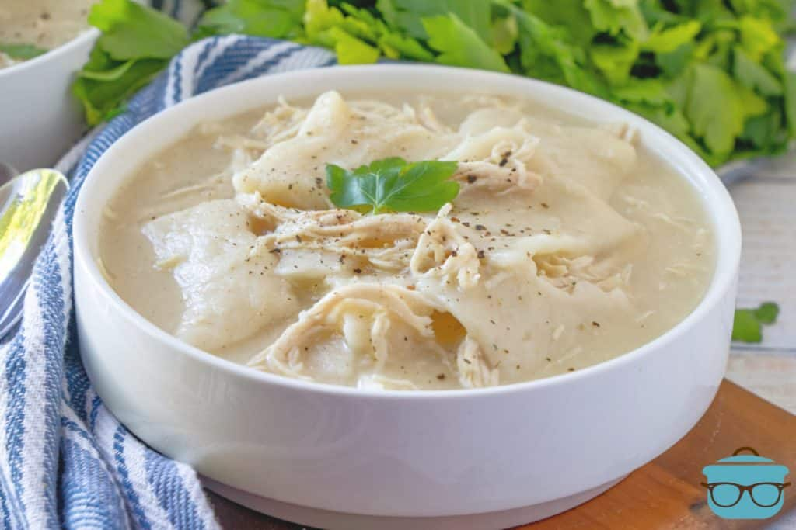

Chicken n' Dumplings

Description:
Chicken and dumplings are a classic souther recipe that's both filling and easy to make.
I can remember getting excited as a kid whenever mom decided it was time for chicken and dumplings for dinner.
With a short ingredient list, and no need for any special tools or appliances, this meal can be a quick and delicious addition to anyones culinary arsenal!
All you need to bring to the kitchen is:
- 1 whole chicken (To speed up this process you can even use a rotisserie chicken!)
- 1 onion
- 3 large carrots
- 8 cups low sodium chicken broth
- salt and pepper
- optional: bay leaf or a pinch of poultry seasoning
- can of biscuit dough, or prepare your own!
- Place chicken, carrots, and onions in a large pot and season to taste.(If using pre-cooked rotisserie, do not include the chicken.)
- Add chicken broth. Bring to a boil, reduce heat, and simmer covered 45-60 minutes or until chicken is tender.
- Remove chicken and vegetables from broth. Discard skin and bones. Chop chicken into bite size chunks and set aside.
- Gently add biscuit dough in to the broth and simmer 15-20 minutes.
- Stir in chicken and vegetables and cook for a few minutes until heated all the way through.